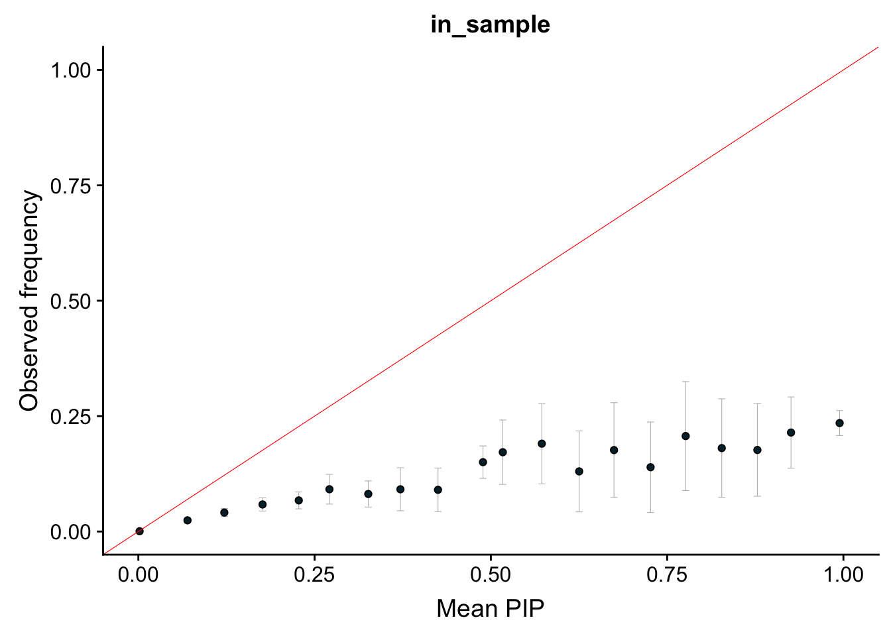
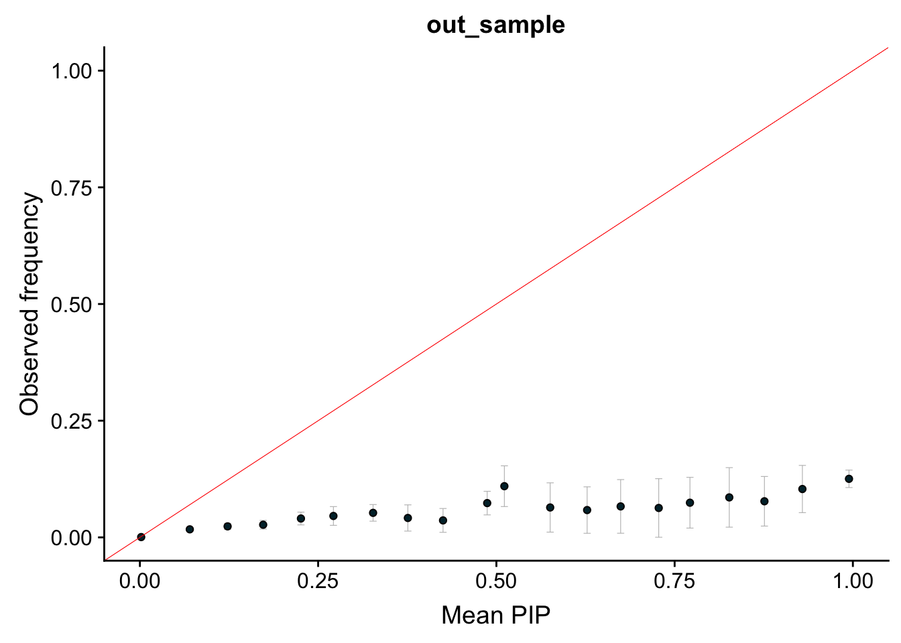
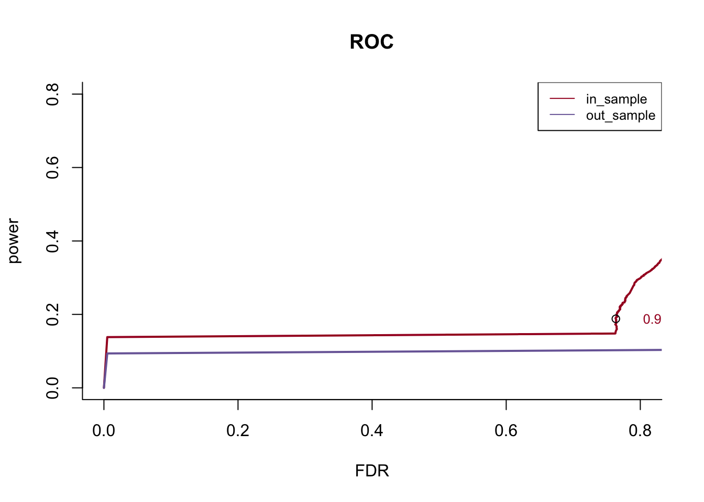

Last updated: 2019-04-15
workflowr checks: (Click a bullet for more information) ✔ R Markdown file: up-to-date
Great! Since the R Markdown file has been committed to the Git repository, you know the exact version of the code that produced these results.
✔ Environment: empty
Great job! The global environment was empty. Objects defined in the global environment can affect the analysis in your R Markdown file in unknown ways. For reproduciblity it’s best to always run the code in an empty environment.
✔ Seed:
set.seed(20190115)
The command set.seed(20190115) was run prior to running the code in the R Markdown file. Setting a seed ensures that any results that rely on randomness, e.g. subsampling or permutations, are reproducible.
✔ Session information: recorded
Great job! Recording the operating system, R version, and package versions is critical for reproducibility.
✔ Repository version: c37add9
wflow_publish or wflow_git_commit). workflowr only checks the R Markdown file, but you know if there are other scripts or data files that it depends on. Below is the status of the Git repository when the results were generated:
Ignored files:
Ignored: .DS_Store
Ignored: .Rhistory
Ignored: .Rproj.user/
Ignored: .sos/
Ignored: data/.DS_Store
Ignored: output/.DS_Store
Untracked files:
Untracked: data/random_data_31.rds
Untracked: data/random_data_31_sim_gaussian_35.rds
Untracked: data/random_data_31_sim_gaussian_35_get_sumstats_1.rds
Untracked: data/small_data_1.ld_in_file.in.ld
Untracked: data/small_data_1.ld_out_file.out.ld
Untracked: data/small_data_132.ld_in_file.in.ld
Untracked: data/small_data_132.ld_out_file.out.ld
Untracked: data/small_data_132_sim_gaussian_12.rds
Untracked: data/small_data_132_sim_gaussian_12_get_sumstats_1.rds
Untracked: data/small_data_1_sim_gaussian_2.rds
Untracked: data/small_data_1_sim_gaussian_2_get_sumstats_1.rds
Untracked: data/small_data_46.rds
Untracked: data/small_data_46_sim_gaussian_10.rds
Untracked: data/small_data_46_sim_gaussian_10_get_sumstats_2.rds
Untracked: data/small_data_69.ld_in_file.in.ld
Untracked: data/small_data_69.ld_out_file.out.ld
Untracked: data/small_data_69_sim_gaussian_3.rds
Untracked: data/small_data_69_sim_gaussian_3_get_sumstats_1.rds
Untracked: docs/figure/r_compare_finemap.Rmd/
Untracked: docs/figure/r_compare_susieb_ROC.Rmd/
Untracked: docs/figure/test.Rmd/
Untracked: figure/
Untracked: output/dscoutProblem475.rds
Untracked: output/dscoutProblem75.rds
Untracked: output/finemap_compare_random_data_null_dscout.rds
Untracked: output/finemap_compare_random_data_signal_dscout.rds
Untracked: output/finemap_compare_small_data_signal_dscout.rds
Untracked: output/finemap_compare_small_data_signal_dscout_RE8.rds
Untracked: output/r_compare_FINEMAP_PIP_ROC.rds
Untracked: output/r_compare_dscout_susie_finemappip_tibble.rds
Untracked: output/r_compare_dscout_susie_finemappip_truth_tibble.rds
Untracked: output/r_compare_susieb_PIP_ROC.rds
Untracked: output/r_compare_susiepip_tibble.rds
Untracked: output/r_compare_susierss_PIP_ROC.rds
Untracked: output/random_data_100_sim_gaussian_null_1_get_sumstats_1_finemap_1.rds
Untracked: output/random_data_31_35_fit_em.rds
Untracked: output/random_data_76.rds
Untracked: output/random_data_76_sim_gaussian_8.rds
Untracked: output/random_data_76_sim_gaussian_8_get_sumstats_1.rds
Untracked: output/small_data_42_sim_gaussian_36_get_sumstats_2_susie_z_2.rds
Untracked: output/small_data_92_sim_gaussian_30_get_sumstats_2_susie_z_2.rds
Unstaged changes:
Modified: analysis/SuSiEDAP_Power_data31_35.Rmd
Modified: analysis/SuSiErssNotConverge.Rmd
Modified: analysis/SusieZPerformance.Rmd
Modified: analysis/SusieZPerformanceRE3.Rmd
Modified: output/dsc_susie_z_v_output.rds
| File | Version | Author | Date | Message |
|---|---|---|---|---|
| Rmd | c37add9 | zouyuxin | 2019-04-15 | wflow_publish(c(“analysis/r_compare_finemap.Rmd”, “analysis/r_compare_susieb_ROC.Rmd”, “analysis/r_compare_susierss_ROC.Rmd”)) |
library(ggplot2)
library(cowplot)Warning: package 'cowplot' was built under R version 3.5.2
Attaching package: 'cowplot'The following object is masked from 'package:ggplot2':
ggsavedat = readRDS('output/r_compare_susierss_PIP_ROC.rds')bin_size = 20
bins = cbind(seq(1:bin_size)/bin_size-1/bin_size, seq(1:bin_size)/bin_size)
pip_cali = list('in_sample'=matrix(NA, nrow(bins), 3), 'out_sample'=matrix(NA, nrow(bins), 3))
for(Rtype in names(pip_cali)){
for (i in 1:nrow(bins)) {
data_in_bin = dat[[Rtype]][which(dat[[Rtype]][,1] > bins[i,1] & dat[[Rtype]][,1] < bins[i,2]),, drop=FALSE]
pip_cali[[Rtype]][i,1] = sum(data_in_bin[,'pip'])
pip_cali[[Rtype]][i,2] = sum(data_in_bin[,'truth'])
pip_cali[[Rtype]][i,3] = nrow(data_in_bin)
}
}
for(Rtype in names(pip_cali)){
pip_cali[[Rtype]][,c(1,2)] = pip_cali[[Rtype]][,c(1,2)] / pip_cali[[Rtype]][,3]
}dot_plot = function(dataframe) {
ggplot(dataframe, aes(x=mean_pip, y=observed_freq)) +
geom_errorbar(aes(ymin=observed_freq-se, ymax=observed_freq+se), colour="gray", size = 0.2, width=.01) +
geom_point(size=1.5, shape=21, fill="#002b36") + # 21 is filled circle
xlab("Mean PIP") +
ylab("Observed frequency") +
coord_cartesian(ylim=c(0,1), xlim=c(0,1)) +
geom_abline(slope=1,intercept=0,colour='red', size=0.2) +
expand_limits(y=0) + # Expand y range
theme_cowplot()
}idx = 0
for(Rtype in names(pip_cali)){
idx = idx + 1
pip_cali[[Rtype]][,3] = sqrt(pip_cali[[Rtype]][,2] * (1 - pip_cali[[Rtype]][,2]) / pip_cali[[Rtype]][,3]) * 2
pip_cali[[Rtype]] = as.data.frame(pip_cali[[Rtype]])
colnames(pip_cali[[Rtype]]) = c("mean_pip", "observed_freq", "se")
g = dot_plot(pip_cali[[Rtype]]) + ggtitle(Rtype)
print(g)
}
pip_cutoff = 0.05
roc_data = function(d1, cutoff = c(pip_cutoff, 0.999), connect_org = T) {
grid = 500
ttv = seq(1:grid)/grid
ttv = ttv[which(ttv>=cutoff[1] & ttv<=cutoff[2])]
rst1 = t(sapply(ttv, function(x) c(sum(d1[,2][d1[,1]>=x]), length(d1[,2][d1[,1]>=x]))))
rst1 = cbind(rst1, sum(d1[,2]))
rst1 = as.data.frame(rst1)
colnames(rst1) = c('true_positive', 'total_positive', 'total_signal')
rst2 = as.data.frame(cbind(rst1$true_positive / rst1$total_positive, rst1$true_positive / rst1$total_signal, ttv))
if (connect_org) {
# make a stair to origin
rst2 = rbind(rst2, c(max(0.995, rst2[nrow(rst2),1]), max(rst2[nrow(rst2),2]-0.01, 0), rst2[nrow(rst2),3]))
rst2 = rbind(rst2, c(1, 0, 1))
}
colnames(rst2) = c('Precision', 'Recall', 'Threshold')
return(list(counts = rst1, rates = rst2))
}
print("Computing ROC data ...")[1] "Computing ROC data ..."roc = list()
for (method in names(dat)) {
roc[[method]] = roc_data(dat[[method]])
}chunks = 0
smooth = FALSE
colors = c('#A60628', '#7A68A6', '#348ABD', '#467821', '#FF0000', '#188487', '#E2A233','#A9A9A9', '#000000', '#FF00FF', '#FFD700', '#ADFF2F', '#00FFFF')
library(scam)Loading required package: mgcvLoading required package: nlmeThis is mgcv 1.8-26. For overview type 'help("mgcv-package")'.This is scam 1.2-3.create_chunks = function(item, n) {
splitted = suppressWarnings(split(item, 1:n))
return(c(splitted[[1]], splitted[[length(splitted)]][length(splitted[[length(splitted)]])]))
}
make_smooth = function(x,y,subset=chunks, smooth = FALSE){
if (smooth) {
if (subset < length(x) && subset > 0) {
x = create_chunks(x, subset)
y = create_chunks(y, subset)
}
dat = data.frame(cbind(x,y))
colnames(dat) = c('x','y')
y=predict(scam(y ~ s(x, bs = "mpi"), data = dat))
}
return(list(x=x,y=y))
}
add_text = function(thresholds,x,y,threshold,color,delta = -0.06) {
idx = which(thresholds == threshold)
text(x[idx] - delta,y[idx],labels = threshold,col = color,cex = 0.8)
points(x[idx], y[idx])
}
labels = vector()
i = 1
for (method in names(roc)) {
yy = make_smooth(1 - roc[[method]]$rates$Precision, roc[[method]]$rates$Recall)
if (i == 1) {
plot(yy$x, yy$y, t="l", col=colors[i], ylab = "power", xlab ="FDR", main = 'ROC', bty='l', lwd = 2, xlim = c(0,0.8), ylim = c(0,0.8))
} else {
lines(yy$x, yy$y, col=colors[i], lwd = 2, xlim = c(0,0.8), ylim = c(0,0.8))
}
#add_text(dat[[method]]$rates$Threshold, yy$x, yy$y, 0.9, colors[i])
add_text(roc[[method]]$rates$Threshold, yy$x, yy$y, 0.95, colors[i])
labels[i] = method
i = i + 1
}
legend("topright", legend=labels, col=colors[1:i], lty=c(1,1,1), cex=0.8)
sessionInfo()R version 3.5.1 (2018-07-02)
Platform: x86_64-apple-darwin15.6.0 (64-bit)
Running under: macOS 10.14.4
Matrix products: default
BLAS: /Library/Frameworks/R.framework/Versions/3.5/Resources/lib/libRblas.0.dylib
LAPACK: /Library/Frameworks/R.framework/Versions/3.5/Resources/lib/libRlapack.dylib
locale:
[1] en_US.UTF-8/en_US.UTF-8/en_US.UTF-8/C/en_US.UTF-8/en_US.UTF-8
attached base packages:
[1] stats graphics grDevices utils datasets methods base
other attached packages:
[1] scam_1.2-3 mgcv_1.8-26 nlme_3.1-137 cowplot_0.9.4 ggplot2_3.1.0
loaded via a namespace (and not attached):
[1] Rcpp_1.0.0 compiler_3.5.1 pillar_1.3.1
[4] git2r_0.24.0 plyr_1.8.4 workflowr_1.1.1
[7] bindr_0.1.1 R.methodsS3_1.7.1 R.utils_2.7.0
[10] tools_3.5.1 digest_0.6.18 lattice_0.20-38
[13] evaluate_0.12 tibble_2.0.1 gtable_0.2.0
[16] pkgconfig_2.0.2 rlang_0.3.1 Matrix_1.2-15
[19] yaml_2.2.0 bindrcpp_0.2.2 withr_2.1.2
[22] stringr_1.3.1 dplyr_0.7.8 knitr_1.20
[25] rprojroot_1.3-2 grid_3.5.1 tidyselect_0.2.5
[28] glue_1.3.0 R6_2.3.0 rmarkdown_1.11
[31] purrr_0.2.5 magrittr_1.5 whisker_0.3-2
[34] splines_3.5.1 backports_1.1.3 scales_1.0.0
[37] htmltools_0.3.6 assertthat_0.2.0 colorspace_1.4-0
[40] labeling_0.3 stringi_1.2.4 lazyeval_0.2.1
[43] munsell_0.5.0 crayon_1.3.4 R.oo_1.22.0 This reproducible R Markdown analysis was created with workflowr 1.1.1